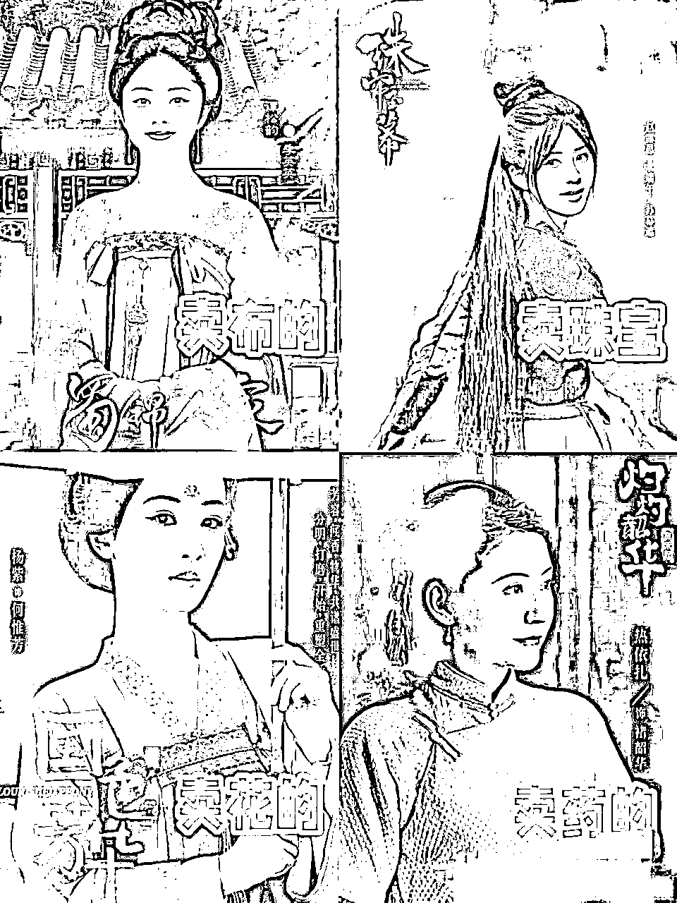
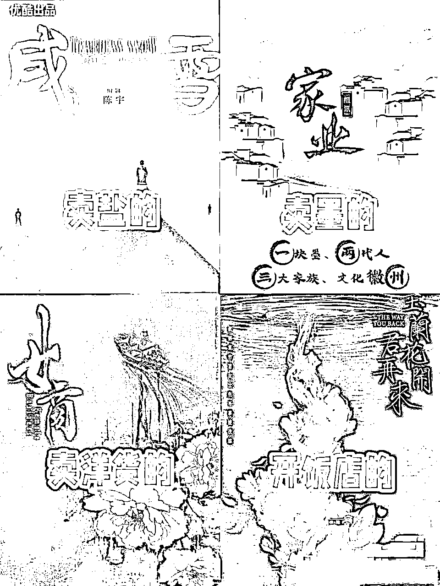

来源：https://p8tchgpz2u.feishu.cn/docx/TPn4dQXTjokcKkxSvdyc9r7mnmh
各位小伙伴大家好，我是梁靠谱，在过去的一年时间里，我给上千个付费学员进行了销转系统的制定和优化，交付了上百个企业和团队的销售培训，看了一些书、重温了一些剧，还看完了奥运会。
又回溯了一遍做自媒体这四年多，对我产生影响和发生交集的KOL们，因为在这个过程中大量接触不同的人，所以对于不同的IP所带来的不同商业价值，有了新的思考框架，今天想跟大家聊聊，人设对于个人IP的接受度、传播性和商业价值的重要作用，以及你该如何提炼自己的人设。
本文的结构分为以下几个部分：
一、人设在销售成交中的十倍差异
二、不讨喜的人设在传播中狗不理
三、人设的内核会跟时代相互作用
四、我们的人设能如何为业务服务
前导：人设这个词，最初叫「人物设定」或者是 「角色设定」，是游戏或者影视作品里，对一个角色样貌、属性、性格、技能、触发条件等等的设计。
比如很经典的IP《仙剑奇侠传》，就是陪我们这代人成长起来的，因为世界观宏大，人物又包含神、魔、人、鬼、妖的等多个界别，每个角色背后的文化和情感有丰富多元，所以经久不衰，也被改编成各种游戏、各种剧、各种周边，商业价值极高，对用户的心智管理处于统治地位。
同时，中外的所有经典的作品，也都如此，人物绝不是非黑即白，而是充满矛盾但又做出了符合当下情境里最合理的选择，就像漫威《复仇者联盟》里的钢铁侠，富有、毒舌、没有同情心和共情力，却又能为了拯救的地球牺牲自己，这种「苍生观」，是仙侠剧和英雄片里最常见的核心价值观。
比如《甄嬛传》里的华妃，目中无人、草菅人命，但她也一辈子寻寻觅觅求不到所得，就算拥有也短暂失去，所以网友也调侃，她眼里只有老公 、哥哥、蟹粉酥，并称「如果我老公也这样对我，我也会干掉情敌」。
好的剧本，你会发现情节的推动跟人物性格的关系很大，合理且扣人心弦，而不是像烂编剧那样，情节推动全靠巧合。
现实生活也是一样的，我早就想写这篇文章，但真正让我动笔的，是这两个月看奥运会，结束了还在持续关注和消费，戒断症状很严重，体育圈的商业化、运动员的IP化，以及现在这个时代的运动员退役后会比上个时代更幸福，也是因为有了粉丝的关注度和付费的缘故。
他们之所以讨喜，也是因为人设鲜明，在整体的群像里，不会泯然于众人。
因为自媒体的发展，我们每个普通人也有了自由表达、被关注、赚取影响力红利的权利，有人被夸、有人被骂、有人一会儿被夸一会儿被骂，有人压根就没被关注，也跟人设有很大的关系。
一个厚重的个人IP能够穿越周期，撬动用户的全周期商业价值，成功的IP离不开人设的作用，下面我就从人设差异化、与社会意识形态的互相作用，以及我们普通人如何提炼这几个方面展开讲讲，希望能对大家有帮助。
做营销，要借助人设的力量，才能事半功倍，不管是整体品牌、直播间、私域IP还是引流的选题，都是同一个道理，先给大家上几个例子来品品。
第一个例子，职场赛道的博主选题，商业模式是卖课程/书籍。
A博主标题：在职场里如何提高情商，学会跟人相处？
B博主标题：在体制上班20年的阿姨教会我的5个职场做人法则，想晋升你的不要错过/早学到就不会吃这么多亏了！
如果你是职场人，会点开那个来看一看？
第二个例子，大健康赛道的博主，商业模式是卖保健产品。
X博主：预防大于治疗，很多人发现的时候就晚了，就是因为平时没重视，接产品软广告。
Y博主：协和医院的特聘老专家说，上医治未病，预防大于治疗，很多人发现的时候就晚了，就是因为平时没重视，后面再接广告。
如果再加上其它的背景性转化素材，比如世界卫生组织调查显示，达到同样健康标准所需的预防投入与治疗费，抢救费比例为1:8.5:100，即：预防上多次投资1元钱，治疗费可减支8.5元，并节约100元的抢救费。如果你还是觉得还好，那乘以一万呢？
如果再加上具体的“气血不足、动动就喘、代谢率低、易胖难瘦”这些痛点和场景，以及改变之后的现状呢，是不是一套完整的高转化营销文？
所以，咱们卖什么东西，真的不是支个摊就开卖了，要有诚意，不光靠嘴，还靠脑子，我为什么卖，凭什么卖，是要自己准备好、展示全的内容方面
这里的「凭什么卖」，就是人设。
你做减脂的，你是医生还是营养师，还是自己无痛瘦了几十斤还不皮肤松弛？帮多少人瘦了多少吨了？你做教育的，自己是老师还是妈妈，得过什么奖项，有什么样满天下的桃李？或者你娃从来没花钱补课，你自己辅导的，考上了985、211、常青藤、斯坦福？
如果是做知识付费，你自己在知识上，第一变过现吗？第二有SOP吗？第三这个SOP在多少人身上验证过，给 多少人服务过，跑通过结果？如果没有，那不仅是割韭菜，还是空中楼阁的臭流氓。
至于为什么卖？是理由、是历史、是故事、是经历，比如因为自己瘦下来，而想要帮人瘦下来。比如想帮家里减轻负担，才带农副产品等等。有了理由，就掌握了“道”，古人说「得道者多助，失道者寡助」，就是这个道理。
另外人设可以从无到有，也可以更换，举一个人设一换、业绩千万的例子，也是我们孵化出的IP。
他是一个医美护肤品品牌的投资人，85后男性，已娶妻生子，最开始他发朋友圈，总发一些改装车、户外活动之类的，我就说，你这个行不通的，你的目标用户都是青年和中年女性，这类姑娘有几个对你这些东西感兴趣的嘞？
就算同为男性的人对你很羡慕，或者觉得你赚到钱了才能买这些，第一，你也不卖创业项目，没法转化他们，第二，想让他们消费，甚至给老婆买产品送礼物，那概率太低了，你看看有几个能做到的，就算东西是好东西，从他们者买到家里，也会被老婆嫌弃的，而且男性的商业价值有多少，你就看看父亲节有几个商家营销吧。
我说，你不有女儿吗，拿来晒生活，用素材、让娃自己赚奶粉钱，女儿奴的人设安排上，日常的家庭地位，算上狗，你排老五，在家给老婆护肤、洗头，人前霸道总裁、人后给孩子当马骑。
果然，改完了之后，数据不是增长，而是暴涨，评论区说啥的都有，羡慕的、骂自己家老公的，还有让大家醒醒，说你老公也只会放屁和挠屁股的，有圈姐妹一起来看的，因为评论的数量和转发的数据特别多，所以帖子的权重是很高的，然后在发转化内容的时候，下单就是很多的。
有一期的选题是我给的，讲的是，家庭关系里，越早建立的关系应该权力层级应该越高，即，夫妻关系应当先于亲子关系，所以孩子在对父母不尊敬的时候，一定要及时制止和修正，这一期是爆了的，关于一个创业者能认可家庭主妇的价值，并且为了妈妈批评一直以来宠爱的孩子，你光看看这个选题，就知道多少人会被触动。
因为这个人设的存在，本身就是情绪价值，是女性意识下最或缺和最新闻乐见的内容，所以做自媒体，你代表谁的立场在表达，是要刻在脑子里的，代表谁，谁就为你付费，要代表兜里有钱的人。
她们会把羡慕、嫉妒、愤怒、失落、希冀，全部转化成下单的动力， 女人要对自己好一点，好的方式，就是从你这买产品给自己疯狂使用，怎么样，转起来了吧！
所以靠谱理解的个人品牌会包含了几个部分和元素：首先是商业定位，即，你卖什么产品，为什么人群提供什么价值、解决什么问题，用户有这个问题的时候，就会想到这个品类。
但是，想到这个品类的时候就包含了竞争和选择，具体选谁，选择的原因又是什么呢？这里就衍生出了个人品牌的第二个部分，就是主理人和提供服务者本身的标签和设定。
传统的评价和比较体系，是比性价比和参数，比如你交付多久，我价格多少钱，你有多久的保修，我的年度销量和活动政策是什么。可是会被这些吸引来的人，更会被这些吸引走。
但在个人IP时代，我们可以靠什么来吸引用户，去干预对方的决策过程和结果呢？就是价值观、人格魅力、生活方式等等，这样的客户有粘性，不会被抢走，而这些元素都和人设有分不开的关系。
比如说，做闲鱼培训、AI写作、公众号爆文等的项目培训的，如果都是千篇一律的毛头小子，也不发个照片，也看不出来是真人还是人机，那怎么去选呢，是不是毫无感觉。
但如果你有一个主人设、一个社会关系，就可以这样去塑造个人品牌，你用RPA管理了20个爆文公众号，其中5个还房贷+日常开支，5个给媳妇买黄金，黄金在家里好的时候是她的首饰，万一以后有什么变动，就是她的盘缠，还有5个给女儿攒嫁妆，另外5个做储蓄。
这样子，一下子没有生命的项目、数据、平台和内容，就变得有生命且具像化，所以用户在做选择的时候，女性用户必定会选，还会鸡自己的老公去报名，还会在圈子里形成传播。其实广告和营销行业的内核就是如此，宣传很多时候都不光是为了让面对面的用户来买，更多的时候是让用户给其他的用户来解释。买我产品，或传我美名。
所以一个人的标签会有很多很多个，经历、爱好、社会关系、等等等等，但你无法在营销和做内容的时候，全部展示出来。具体展示哪部分，不提哪部分，就要根据你的商业定位、用户画像来筛选，最终起到转化的作用。
比如我，我也养狗、也爱看悬疑小说、沙雕段子、也爱吃美食，但我很少在朋友圈展示这些，因为我就是一个女性创业者，知识付费主理人的形象，这些跟我的IP相去甚远，我会展示出来的是什么呢？
因为我没有孩子，所以只能展示和父母的关系，且这种关系不是天然的好，而是哲学上的矛盾与统一，是我从小不和他们在一起的疏离，是价值观不合造成的剧烈矛盾，是曾经觉得长辈很强，后续自己成长之后的精神弑父，最后到理解也和解，因为创业救赎了我。
但和解之外，也有自己的原则，孝敬但不愚孝，有自己的坚持和自由，以及「连亲妈也不放过陌生人更不要想着在我这里占到什么便宜」的不好惹人设，让我减少了很多不必要的麻烦。
另外，虽然我的主业是医生，但我的业务并不依赖于这个身份展开，所以我的主人设还是商业相关，销售培训，医生是一个身份标签，前三年疫情，后两年医疗反腐，累不说，待遇待遇并不好，有风险还挨骂等等，我会展示我如果想通过打工来实现坐商务舱，或者送朋友比较贵的礼物，是很难实现的，所以还是要创业。
这样的身份、经历、心境，是很容易引起共鸣，也很容易让人羡慕，然后让人成交付费的，做个人品牌就是让人记住、喜欢、追随，愿意复制你和追随你。
很多人的朋友圈，点进去都是广告和鸡汤，看完了也记不住，这里给大家一个方法，叫做：人设来区分合格的朋友圈以及不合格的朋友圈。
你自查一下自己的文案，如果换一个人，换个头像和IP来发，能不能照搬照抄，有没有违和感？如果没有的话，恭喜你，朋友圈发了个寂寞，无效的。
鸡汤谁都能发，比如古人说的话，书里的名言、醒世警句，网络热门的梗，但是标签+故事+观点，就是你特有的内容，比如：
A：做个人IP可以精准获客，它是长期而深远的资产。
B：在成功孵化出1000+个月入过万，上百个月入十万的IP后，我核算出了公域获客的成本，比传统渠道投放的要低上90%，而且还有长尾效应，如果你有产品想要推广，遇到了渠道的困难，那我建议你找我，事半功倍。
这个B，别人就抄不走，因为那是我的成绩，用时间和心血积累出来的。这个人设，是结果，是用户证言。
最后的一个技巧是，性格也是人设。大家如果有加过我微信，就会发现我其中一个公域引流的账号，签名是：专注IP孵化，销售成交培训，脾气不好，拒绝白嫖。平时直播，如果遇到冒犯我的人，我会直接开怼。
做知识付费的人，最不喜欢遇到的就是白嫖党，所以我一直对外的人设就是，里外分明，脾气不好惹，于是线下见到我的人都会说一句，你真人很温柔。
所以你看，如果预期了你是脾气不好的人，你普通就说你温柔，但如果预期了你是很好说话的人，你拒绝不礼貌的要求，都是人设崩了。
所以我说，这个脾气暴躁也是人设，为的就是筛选、以及节省时间，真正能走到见面那一步的人，就可以真实做自己了。
所以不要立虚假人设、完美人设、老好人人设，一点也不好用，勇敢做自己，勇敢用内容给自己立起来护城河吧。
时代发展，有很多次过去还不错的，现在都变味儿了，比如「闺蜜」，比如「立人设」，有人出演反派角色却圈粉无数，有人想立好的人设却崩得一塌糊涂，这里面的内在原因是什么呢？
我们先上几个例子：
首先是立学霸人设的翟博士，当年晒自己读博士、说等毕业的那一天要看看谁真的牛逼，后续直播的时候，粉丝问他的论文在知网能不能查，他一脸茫然说知网是什么东西，然后被查论文重复率超高，于是爆发了学术整顿的运动，我为什么印象深刻呢，因为我是「天临元年」毕业的，之前论文重复率要求20%的，当年都改到了5%，一到毕业季就有人在他评论区留言说，你睡着了吗？我还没睡，我还在降重。
再比如立爱读书人设的靳东、博学人设的黄磊、大女主清醒人设的孙怡，都被骂得挺惨，因为真实做的事情，跟立下的人设不符。又或者其实人对于完美的东西本身就很排斥，会想尽一切办法证伪，这是人性里自带的东西，所以立人设切忌完美。
有一个点非常重要重要，就是立完好人设的这些人，其实本身已经不缺钱，也不缺名气了，一个人设能给他们带来什么直观的好处呢？这个东西就叫做「情绪价值」，就是享受被人夸、被人追捧的感觉，你可以看看这几位，平时生活里也都是这种性格的人，所以壁立千仞、无欲则刚，缺什么，就会为了得到什么而做一些事，所以情绪的自给自足也显得非常重要。
所以人设不要完美、也不要装逼、更不要虚假，贵在真实，你看互联网上很多博主，性格各异，要么暴躁、要么财迷，要么抠门，要么强迫症，因为真实，所以能代表千千万万大众，所以还是 非常圈粉的。
另外比较注意的是，人设切忌双标，对自己零要求，对别人高要求的那种，真的是最容易崩盘的，嘴上说着不要雌竞，但净干雌竞的事情，过去说不会割粉丝，靠着骂别人对号入座，但过两年也直播带货，他是电，他是光，他是唯一的智障，这种还是少碰为妙。
另外，崩盘的绝对不止娱乐圈或者自媒体圈，体育圈和其它有流量的圈层也一样，甚至是素人也会口碑崩盘，只是没有那么大的影响力，没有被很多人知晓而已。
比如今年七八月份奥运会，体育圈尤其国乒是非常红的，有些喜欢运动员的粉丝的行为过激，就被一直说，拒绝饭圈文化等等，结果过了奥运之后的第一个商业赛事WTT，票价直接从往年的69、99涨价到588、1188，甚至周边的产品都卖几百上千，粉丝纷纷吐槽说，这比演唱会和TFboy的周年还贵，甚至还是盲盒票，不知道能不能看到自己喜欢的运动员的那一场。
这个行为直接惹怒了粉丝，纷纷说国乒一边说抵制饭圈文化，一边赚球迷的钱，实在是念完经打和尚，所以有几天的热搜压根就是WTT卖不出票。当时我也写了一篇公众号来说这个，结果就被推荐了。
这就是这个时代，从前有人不喜欢你，也拿你没办法，现在不喜欢你，就是可以拿钱和业绩制裁你，所以不要轻易去批判，要一直清醒地知道谁是金主，谁在付钱。
不瞎立人设的IP和品牌，哪怕遇到了舆情，伤害也不会被放大，甚至还会有粉丝帮他们说话，不信我给大家举两个例子：
比如蜜雪冰城因为食品安全、原料过期被曝出来的时候，用户都说啥：「小雪都没有嫌我穷，我凭啥嫌它脏」，「都是因为我总不去，小雪的原料才会过期的」，「千万不要取缔蜜雪冰城，不然我以后五块钱在哪还能买一杯喝的」，所以你看，网友玩儿梗的背后，也有底层逻辑。
比如有些男演员和爱豆，卖爱妻人设，结果被曝出来很多伦理的问题，人设就崩了，断送了整个职业生涯，但如果就不立这个呢？就像黄宗泽，下雨天大巴车跳舞场面现在仍然封神，每次有人塌方，他的粉丝就会说，还好我的爱豆，本来就是一片废墟。林更新也一样，万花丛中过，片片都沾身。
谱谱我也算深谙此道了，所以我给自己立的人设，都懒得一批但是特别省心，我给你们点点：
虽然我主业是医生，但这就是一份工作，我可不辛苦因为是工作都不轻松，也谈不上伟大啥的所以你休想让我献身。副业的话，我上网就是为了赚钱的，不是为了交朋友的，我就是贪财好色、烂命一条，所以如果你也愿意搞钱我们可以聊聊，但我没有多余的爱给付费用户，也不要说什么你影响力大就应该以身作则、注意言行啥的，对不起，我不玩那个，你给我闭嘴。
所以如果有人尝试喷我，他会发现他喷的都没有我自己狠，于是就「走，下一家」！只要我没有道德，你就休想绑架我，只要我不立牌坊，就不会被世俗的眼光所影响，能赚钱，还快乐，家人们。
记得十年前看《万万没想到》的时候，王大锤的短剧slogan都是「出任CEO、赢取白富美、分分钟走向人生巅峰」，当时因为经济好，在微博上和抖音上看富豪还挺流行的，现在因为大家都知晓的原因，像省钱、攒钱、咸鱼、挑战一百块在上海活一周之类，就更容易火起来。
比如80后、90后这代人小时候都是看琼瑶、看宫斗，看一群女人为了男人要死要活，看霸道总裁爱上弱智的小白花女主，然后长大后经历了相信、幻灭、破防等阶段，最后就无男一身轻了，甚至有很多相当有影响力和社会地位的女性主张和践行「去父留子」，中国的单亲妈妈也超过了惊人的3000万。
因为经济、人口、自媒体发展等等多因素的互相影响，现在主流的价值观是女性的意识觉醒，尤其是自媒体圈子，更是重灾区，所以就出现了很多过去比较受好评的剧或者人，现在突然口碑逆转的，比如《如懿传》，还有一些其它关于「恋爱脑」的剧，从今年的春天被吐槽到了秋天。
比如从前的剧集总是一个男性和几个女性的情感纠葛，要么就是几男几女的群像，现在的剧集呢，要么是大女主和好几个男人，比如《玫瑰的故事》，要么就是干脆别要男人了，三个女主，比如《梦华录》，人们更愿意看女性成长和觉醒，还有girls help girls。
明年要上的剧更是了，你们看看，一水大女主，一水做生意，是不是风向标已经给到了呢？


剧里的人设也是，如果像过去一样为了男人跟家里决裂，比如王宝钏苦守寒窑18年，比如去年的电视《我的人间烟火》，这种人设不再能受观众的喜欢了，露头就秒，出现就骂。包括今年年初很火的《南来北往》的结局，姚儿在烧烤摊遇到年轻时爱自己爱到发狂的男人，彼时男人已经事业有成、有如花美眷，她却爱人深陷囹圄，守着烧烤摊独自带着儿子度日。
这个结局一出来，就疯狂被喷，说编剧一定是男的，一定要传输类似于喜欢钱和想过好日子的人就要得到不好的下场，满满的男凝和调教的意味，非常恶臭。
所以说如果一个影视作品，一套营销体系或者一个账号不讨喜，甚至是遭到了批评或者审判，很有可能是人设和内核跟这个时代的用户不匹配，这就告诉了我们，想要讨喜，一定要知道观众喜欢看什么。
为了让我们自己有内容可以输出，有粉丝可以购买，有热梗可以传播，首先要了解自己，然后是选择哪个部分适合展示，哪个部分留着自己欣赏就好。我把提炼人设总结成了16字提纲，即，下海原因、战绩可查、社会关系、特殊癖好，以下分别来拆解。
你知道有个很有意思的现象就是，以前有大哥去按脚，都会问按脚小妹，多大了，为啥干这个，小妹就会回答，说家里穷，要给妈妈治病，然后大哥充卡等等，大家就跟人机一样被植入了程序一样，关心来处、劝人从良。所以后来垄断一时的卖茶妹也深谙其道，因为要帮爷爷卖茶叶，所以让很多大哥和大叔大爷神魂颠倒。
咱们说，不太好的事情，其实只是形式上被曲解了，但之所以可以成为流行并且传承，背后不无其合理性，这个合理性，也就是「理由」，你卖一个东西、做一件事的理由，如果正当，其实就占领了「道」，就会有人支持，所谓「得到者多助、失道者寡助」就是这个意思。
所以你看那些助农的主播，为了帮自己家乡的父老乡亲出货的，都因为情怀，得到了很多人的支持和下单。因为自己受了恩惠就转做这个生意的咨询师呀，因为自己皮肤变好了就做管理的美容师啊，产后修复师啊等等，都是「什么拯救了你，你就拿什么拯救世界」的典范。
他们下海和出道的这个理由，本身就自带个人品牌故事和销售信，这比什么品牌营销策略都好用，个人品牌压倒一切品牌，因为道理是让人同意的，而故事是让人相信的。
所以如果你有看过几次得到的跨年演讲或者雷军的年度演讲，就会发现，他们的演讲结构里，多得是故事，所以接着而来的新品发布会，这些产品就能承接住正值沸腾的情绪，让用户激情下单，此为「非理性营销」。
像我做自媒体副业的这五年，也无数次有人问我为啥做这个，我的原因就一个字，穷，如果两个字，就是贫贱，什么贫贱不能移，都是假的，人真的穷了，就会瞬间移动。
我如果说穷，也不是只说穷，说的是读了二十多年书之后工作了，第一个月的工资奖金到手六千多，天塌了，跟想的完全不一样，是接近三十的年纪完全谈不上而立，想给爸妈好的生活也束手无措的无奈。
因为穷怕了，所以就觉得什么面子、什么创业的苦，都跟这些没法比，一旦找到出路，就再也不想回去了，是虽然没有背景、没有资源，但我还有我自己的这种闯劲儿。而一旦做成了，现在再不好过也好过了。
所以你会发现一些名人，如果这人是世家出身，往往流传的故事里不会写幸福的童年和爸妈的精心养育，会去强调从小就对创造和发明有兴趣，但如果这人的出身比较贫苦，就会说说，毕竟大家都不想看二代继承的故事，相比来说，屌丝逆袭更加能给普通人以鼓励。
所以关于起源，都是值得探寻的，就像今年异形宇宙的新电影夺命舰，当你也是先出了爆火的正剧，然后开始出前传，也就是起源，漫威宇宙和很多宏大的ID都一样。
看完这篇文章，记得捋一下你自己的生平哦。
有老话说，先敬罗衣后敬人，在互联网上，你不能怪别人见人下菜碟，应该怪的，是自己不是那个能让别人拿出好菜的人，贵的东西只有贵一个缺点，但是这个缺点没有缺在东西身上，而是缺在人身上了。
所以想要在快节奏的互联网上让别人快速识别到你的价值，第一要把成功案例和结果性事件直观展示出来，包含但不仅限于你的自媒体平台简介，你的私域自我介绍，以及你的内容中。
比如累积服务了多少企业/个人/团队/家庭，为多少人解决了多少问题，帮多少人投放了多少、引流了多少、变现了多少等等，参加香飘飘每年卖出两亿杯，绕地球一圈等等，因此还有一个梗，说是外星人想要来地球，除了要考虑大气层的作用，还要先去面对地球外面绕的香飘飘。
包括日常写帖子、写公告、拍视频、发朋友圈的时候，也要养成习惯，最长不拆过一周就要秀肌肉了，比如你想发认知类内容之前，可以加上一个限定，类似这样：
别人说，我发现很多人做短视频带货有一个误区。
你说，在交付了上千个/两千个学员之后，我发现很多人做短视频带货都有一个误区。
后面再接这个误区以及解决方案，是不是一下子就能侧面展示出你有经验，你是个大佬，你值得追随，以及别人想要在你面前吆五喝六，也要掂量掂量自己是不是够这个分量。
咱们认为，做个人IP，私域朋友圈最长不要超过一周就要露脸+秀肌肉，并且这类内容要置顶，确保新加到你的用户能够在几分钟之内就迅速地get到你的赛道和你在这个赛道里的中位数也就是水平，这直接就把你们之间的权力关系打了一个底，决定了用户未来对你的付费意愿和可能性。
你可能还意识不到这种底有多么重要，我如果跟你说，就像男女结婚的时候，约定了谁掌握财政大权那么重要，你还会不会觉得无所谓？
如果你看过很多演讲、书籍、线下课和营销服务等等你会发现，其实大家用的理论模型、说的心灵鸡汤，不会差出去多远，但是真正决定了声名、影响力和客单价的因素是什么？是服务的案例，是客户的档次和成绩不同，所以我们要想通，能够成就我们个人品牌的，也是战绩可查。
所以，向上社交、向上成交，一直是我认为上位最重要的策略之一。
人是一切社会关系的综合，那些群像的电影电视游戏之所以吸引人，除了角色本身的设定以外，还因为他有了这样的性格，所以会对一件事作出相应的反应，还因为你身边有一群爱你和支持你的人，他们包容你的不完美，就像《武林外传》里的金镶玉和佟湘玉一样，像《老友记》、《爱情公寓》还有很多深入人心的IP。
这些故事的推动，是因为你知道这个人哪怕性格是毒舌、爱管闲事、占小便宜等等，也会爱他，也会支持他并且跟他一起承担因为这个性格而发生的事情的后果。
所以落在观众的眼里，也是一种心理投射，我也是这样的人，或者我身边有这样的人，它是一种不可替代的精神寄托和情绪价值，人们称之为「青春」，这种感受会随着剧集的完播而结束，人们称之为「爷青结」。
所以我们做IP，其实是要大量跟客户、甲方、贵人、员工、粉丝甚至是黑子打交道的，在这个过程中，你的态度、你的反应、你的看法、你的避坑经验，都会对别人有价值以及产生影响。
所以迪士尼最火的是玲娜贝儿，环球最火的是变形金刚，为什么？会互动，会对不同的行为和语言产生不同的反应，这是致死量的情绪价值，所以愿意有人排队两小时只为了体验一把。
好多年前我读过一本恶搞三国的漫画书，叫《张飞流水账》，里面有个细节挺印象深刻的：大家都嘲笑阿斗，说这孩子可能是子龙长坂坡救他的时候在怀里闷坏了，别人给他点心，总是在屁股上蹭一蹭再吃，谁料军事说，少主才是真智慧，你们没发现他吃到的点心，比任何人都多吗？
别人都想试试他的反应，以为自己是那个决定事情发展的人，其实最高端的猎人、以猎物的方式出现。
所以我们会对什么样的人有什么样的反应，也是粉丝和观众一直在观察的，结合到我们最开始说的，是不是觉得这也很像NPC了？是这样的，做IP，就是要有被用户作为养成系来观察和对待的觉悟，隐私和性格都不能拿来卖的话，还有什么能拿得出手的呢？
有人可能会说，我社恐，不知道怎么晒互动，好家伙那其实更有意思，i人是e人的玩具，这话没有听过吗？社恐如何冒汗，谈客户的时候怎么抠出三室一厅的，这可都是大家津津乐道喜欢看的东西。
社恐如何做社群、社恐怎么做直播、社恐创业酒局的那些事儿，写着写着，你就真的很圈粉了，做自媒体，无非就是做别人的嘴替而已，这事儿简直易如反掌。
其实很多展示，都是在释放「可得性」，即「你付出什么样的代价可以得到我」，其实不仅是我们做自媒体卖东西， 你们有没有好奇过，为什么有的人明明知道这个人跟她朋友谈过，分手了之后，她还去谈一下，结果搞得朋友反目，在圈子里臭了也乐意。
其实就是因为两个人谈的时候，这个接盘姐看到这个男的对这个女的这么好啊，这女的这么欺负他，他还对她挺好的，那我没那么难相处，是不是我上我也行，一种征服欲和something else，很微妙的。
所以被欺负还能笑意盈盈的，其实是在兼容，是情商更高，是对人际的吃水线更深，于是就可以一波搞定一窝姑娘，你品品，是不是这个道理。
我目前自己验证出来的最好用的人设，是「区别对待」，为什么这样呢？因为我觉得互联网公司的「奖惩错逆」有点严重，很多公司都快倒闭了，还是在努力拉新而对老客户不好，那就只能得到别人的短择。
我自己的矛盾统一，大多来自于对自己人极尽可能的交付，对只有意愿而妄图用可能性来兑换我的确定性的人，一脚踢翻他的框架。所以我每次直播、发圈，基本上就是骂得越狠，用户越嗨，人均抖M实锤了。
个性爱好的作用分为向内和向外，向内的作用是马斯洛需求理论的高层次，即，我们努力工作是为了什么，维持一个爱好，不论是登山、户外、拼图、旅行、音乐、宠物等等等等，都能辅助保持身心健康、增加幸福感受，爱好的前提肯定是烧钱，你会发现人到中年，光生活就够人妥协了，所以有爱好一定是倒逼人的成长和赚钱动力的。
向外的话，一定是「造梗」，而「梗」是服务于「传播」的，不信你可以思考一下，是段子传得快，还是产品传得快？比如「许昕还是太全面了」、「米饭仍旧是一小碗儿」、「灵魂汁子、浇给」、以及最近的「螃蟹就吃二两母，青青一果」。
这些梗会大量出现在热门评论区和词条里，人们点进去，就会对原博形成关注，看的久了，产生数据、下单购买，这个作用远远大于商品本身的传播力，以及广告投放的效果。
不信你去搜搜，大力伦一句长城炮，给这个汽车品牌增加了多少数值？
包括像我们家附近的一个菜市场，有一家卖炸鸡柳的店， 因为一个妈妈买了一份鸡柳，两个儿子抢吃的打起来了，眼镜片都打碎了，听到的人都想知道一下它到底多好吃，另一个区的人都赶过来买。
这俩儿子从小学现在估计都上大学了，这个梗还在传播，甚至大家在买的时候都在说，你吃完了这个不会揍我吧？所以这样的小店看着不起眼，送孩子出国上学分分钟不在话下。
我们把每一个形容词扩展为一个事件、一个场景、一个感受，它就能给别人留下深刻的印象。
最近我重温了一下肖央的电影《误杀》，男主如何给目击证人们留下深刻印象让大家给他做假证而审判自己内心的正义呢？其实就是爱好、情绪和场景。
以上，感谢大家的时间和注意力，祝各位都能拥有厚重的个人品牌，祝市场和岁月都是下酒菜。